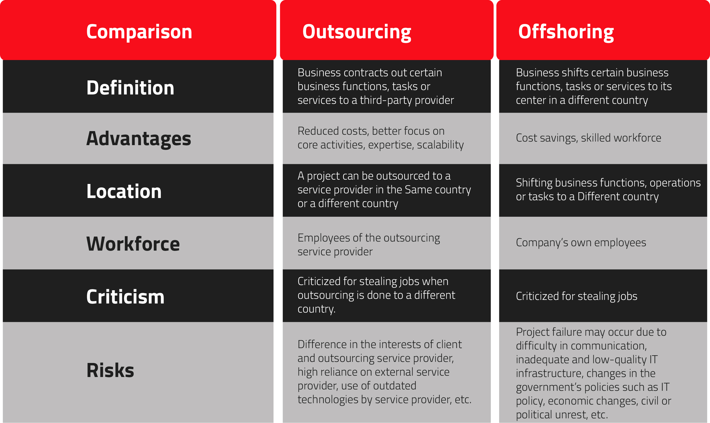

Here are the best possible answers to your questions
Outsourcing is a business practice in which a company hires a third-party to perform tasks, handle operations or provide services for the company.
A third-party provider or a service provider, arranges for its own workers or computer systems to perform the tasks or services either on site at the hiring company's own facilities or at external locations
Outsourcing is also known as Business Process Outsourcing (BPO). This is the process of hiring another individual or company, either domestically or internationally, to handle business activities for you. It has become a common business practice that allows small and medium-sized businesses to gain services and skills they would usually find hard to develop, because of either financial or manpower restrictions, or possibly a combination of both. Meaning, you can grow your business as and when you need to, without any major investment.
Over the years, outsourcing has become an imperative business strategy of global corporations, startups, mid-sized companies, enterprises, and all others to get the highest level of service while cutting down the price. Now, a strategic partnership between the two firms for achieving the best outcome from an outsourcing venture has become the way out.
It also allows your business to focus on core competencies and, more importantly, cut costs and improve efficiency, all very much hassle-free. As time has gone by over the last decade or so, business owners now realize that there are many reasons that companies, both big and small, outsource various jobs, but the most prominent advantage seems to be the fact that it saves money.
Companies today can outsource a number of tasks or services. They often outsource information technology services, including programming and application development, as well as technical support. They frequently outsource customer service and call service functions, human resources tasks and financial functions such as bookkeeping and payroll processing. Companies can outsource entire divisions, such as its entire IT department, or just parts of a particular department.
Knowing the meaning of outsourcing is not enough for a successful business venture. It is imperative you have a clear understanding of what strategy you are adopting, without confusing it with anything else
Right at the mention of outsourcing, thoughts start hopping from outsourcing and offshoring. So, both these are the same? Or is there any difference between the both?
Let’s break it down for your easy understanding.
In the simplest of terms, offshoring is shifting your business processes, services, or other tasks to a different country. While outsourcing is contracting your business processes, offshoring is shifting them altogether to a different country. This is basically centered on the geography of the work.
It is well known that the cost of labor in the Western countries like the United States is really high. The developing countries like India have a vast pool of talent that is available at a comparatively inexpensive rate. By shifting their operations to these developing countries, companies can leverage the cost differentials and get their services completed at a much-lower price
Although outsourcing and offshoring are widely used business models, the difference between offshoring and outsourcing is one of the most misunderstood concepts not only for the general public, but even for the business world
Outsourcing can be done to an outsourcing service provider located in the same country or a different country.
When an outsourcing service provider is located in a different country, then this type of outsourcing is known as offshore outsourcing.
Excellence in management: The noncore functions that a firm outsources will usually go to service providers for whom those functions are a core business competency, further benefiting the business through the improved management of those functions.
Reduced costs:Outsourcing to a third-party provider usually provides large cost benefits to businesses. For example, for a US company, getting a website developed and maintained in-house is much costlier than outsourcing web development to an IT outsourcing service provider in India.
Better focus on core activities: Employing outsourcing strategies allows companies to devote more resources to what they do well, which can improve efficiency and increase competitiveness. Production can be streamlined and production times shortened while reducing operational costs.
Scalability:According to its requirements, a business can increase the size of the outsourced team or decrease it. For example, if a company has hired a team of five remote developers for its current project, but for some reasons, it requires more developers, then the outsourcing service provider can easily scale up the team. The company does not have to spend its time and resources in hiring new talent.
Commitment to perform:You can also enjoy the freedom to choose from the endless technology stack available in the market and be sure to get best results as they are committed to perform.
Reduce employee stress:While you are getting the tasks completed in some other place, your employees can produce better plans to scale, now that they are stress-free.
Fear of losing control:Companies also could realize that they lose control over aspects of the outsourced tasks or services. Lending your work to a third-party always comes with a level of risk and security threats about your ideas being stolen.
Requires constant oversight:The relationship with the third party that takes on the outsourced functions must be managed. This includes negotiating and signing contracts, which requires time and the involvement of a company's legal counsel, as well as the day-to-day communication with and oversight of the outsourced work.
Security threat:Security also is an important factor in outsourcing. Many outsourcing relationships inevitably will involve the third party organization's access to sensitive business data, trade secrets, and other confidential information that is necessary to perform contracted functions.
Communication:Companies might encounter difficulties in getting their own employees to communicate and collaborate effectively with those working for third-party providers
Depending on the scale of your project, technology requirements, budget constraints and other factors, choose whether you want to go for outsourcing or offshoring. If getting the best quality service while on a tight budget is your requirement, outsourcing would certainly be the best approach. It enables you to scale, offers complete flexibility and agility that might be restricted if you go for offshoring
If you are experiencing or noticing any of the below-mentioned signs in your company or your team, it is a sign that you should definitely go with outsourcing.
CROSSED DEADLINES: Do you see yourself running behind schedules most of the time? If yes, it is time you start outsourcing your business processes. If your deadlines are usually crossed and you are not able to complete tasks as planned, you might be in need of an outsourcing company.
STRESSED TEAM:Have a look at your team members. Do they look stressed? Are they multitasking and unable to give their best to any of the tasks? You are in dire need of outsourcing if this is the case with your company as well.
ZERO INNOVATION: Innovation is the key to growth and if your teammates have stopped coming up with new ideas, it's a sign they are either overworked or are having a dry spell of ideas. With outsourcing, you can bring in someone with a fresh perspective and new take on things to foster innovation.
TIGHTER BUDGET:Cutting down costs and better affordability was the reason why organizations started to outsource. If your company is also experiencing your budget getting smaller, outsourcing could be the best option for you.
The reason for these staggering figures is simple: Due to the sheer amount of benefits of outsourcing, it is highly popular across industries. It can help you reduce and control expenses, accelerate company transformation, reduce the time to market, improve your business or focus, and more.
However, choosing a quality outsourcing services provider offering outsourcing solutions and most importantly, the engagement model is not easy. The appropriate model for an outsourcing service is typically determined by the type of service provided. And, when it comes to engagement models, you will often be offered the following models to choose from:
This model can be appropriate in situations where scope and specifications are difficult to estimate or needs evolve rapidly. This is a pay-per-use engagement model. So, you will be billed hourly and can pay daily, weekly or biweekly, depending on the vendor’s requirements.
-You want a flexible and agile project execution,
-The project requirements are not well defined, and
-Your project is large, complex and needs numerous iterations.
-If offers unlimited communication.
-It gives you the flexibility to change the requirements, without having to modify the agreement.
-You only pay for what you want to pay.
-You can prioritize the tasks freely.
-It gives you full access to reports on the development process.
-It is well suited for any kind of projects.
-It simplifies the project specification amendment as per the market needs.
-There is transparency in the customer-vendor relationships.
-The price varies based on the time and effort used.
In this model, you first define the scope, requirements, and timeline and pay a pre-agreed fixed price for the final product. It is straightforward with zero or little external dependencies.
-You have a short-term project,
-The project description is well-defined with clear goals, workflow, and results,
-The product requirements are fixed and stable and you do not foresee a change once the project is started, and
-You want to test a new contractor before you hire them as your permanent vendor.You want to test a new contractor before you hire them as your permanent vendor.
-It is a predefined and pre-negotiated model.
-The clear specifications make the project look better.
-At the project assessment stage itself, the product is divided into the individual tasks. So, you can see the workflow before it starts.
-There is limited communication, which may result in unsatisfactory deliverables.
-There is zero flexibility.
-There are scope-related risks, as any amendments in the scope will result in a change in the price.
-Disputes over what the agreement includes and what calls for an annex at a later stage are possible.
This is the model where the contract is written so that the client pays the supplier for its actual costs, plus a predetermined percentage for profit. Such a pricing plan does not allow for flexibility as business objectives or technologies change, and it provides little incentive for a supplier to perform effectively.
You should choose the dedicated hiring model if
-You have in-house IT staff that can manage and direct projects,
-It is a long-term or ongoing project and need offshore support continually,
-Your original goals and needs are unclear,
-You require more manpower for the in-house development team, and
-You want close coordination.
-It requires vast managerial experience and a technology background.
Since, Cost reimbursable model is considered to be the feasible option to run a successful business. Below are the different custom options available under this model.
Cost Plus Fixed Fee (CPFF):The client only pays a fixed fee upon project completion. The consumable cost, meanwhile, may vary for the entire project. Service providers get their profit from the fixed fee, so they may not need incentive charging for this model.
Cost Plus Incentive (CPI):Unlike CPFF, CPI only adds incentives when the provider exceeds its performance for a certain period.
This is measured based on the metrics given by the client.
Cost Plus Award (CPA):Unlike CPI, CPA only charges clients based on the service provider’s work performance.
This may also depend on the client’s metrics to whether the provider achieves a certain timeline, deliverable, and expectation.
Organizations are increasingly looking for partners who can work with them as they embrace agile development approaches.“Global delivery requires a globally distributed agile process to balance the need for speed and current cost pressures.”
While every model has its own pros and cons, Cost reimbursable model is the most efficient in terms of pricing, because they offer close coordination with the offshore service providers, flexibility, and significant or full control over the resources. This is critical for the success of any project.
By now, we're certain you must have realized that outsourcing is the approach that you must adopt in order to scale, cut costs, and include the latest technology stack. The next question you need to address is "Which is the best country to outsource?”
As per the A.T. Kearney's 2019 Global Services Location Index, India is ranked one in terms of attractiveness for outsourcing. There are over 500 companies in India that are catering to the varying requirements of the western countries. Apart from that, there are some interesting and eye-opening statistics for outsourcing to India
In fact, a Deloitte study, conducted on some global businesses, revealed that over 59% businesses are already outsourcing to India. Not just that, 22% of those that are not currently outsourcing to India are planning to do the same in the coming times.
It is the large talent pool in India that is driving more business to the country. And the outsourcing to India statistics are also majorly revolving around the talent pool itself. Here are some other numbers that will certify India as the best outsourcing country in the world.
1. India has the second-largest, over 100 million, English-speaking people in the world; thus, eliminating any language barrier.
2. By the end of 2020, it is predicted that India might have over 2 billion English-speaking people. Over 3.1 million graduates and over 300,000 post-graduates are churned out from India and 500,000 engineering graduates pass out from Indian engineering colleges each year.
3. Around 4 million IT professionals are directly employed in the Indian IT industry and 10 million indirectly
4. Over 200,000 IT graduates are annually added to the IT workforce of India, making it the youngest employable population globally.
5. In the coming 4 years, it is expected that 40% of the Indian IT workforce would train itself in emerging technology-stack to meet advanced skill requirements
Aren't these reasons enough to compel you to start outsourcing IT services to India? No? Let's find out some more!
Over the years, India has gained popularity as an outsourcing destination across the globe. It is Statistically proven that the country is the preferred choice of most of the countries over most outsourcing companies in the Western Europe or other Asian countries. There are many reasons why this country has gained preference. In fact, many Indian companies are even GDPR compliant to ensure safe and secure outsourcing.
If you are still in doubt about outsourcing development to India, here is a brief of the main reasons that make India a magnet for all organizations looking to outsource IT services to India.
As discussed above, the talent pool in India is getting over 3.1 million additions each year. You can be sure to find the talent that you are looking for from this country. This is a convincing reason to outsource to India
Besides a large number of graduates and post graduates that India produces each year, a large proportion of Indian population is young. Over 50% of India's population is below 25 years of age and more than 60% of Indians are 15 to 59 years old.
It goes without a doubt that the cost of hiring a developer in India is much lower when compared to the cost of hiring a developer in any other developed country. Not just that, by outsourcing, you can save on the cost of office space, software addition, etc.
For example, cost may vary between 50 to 100 US dollars per hour for hiring a Business Development Executive in the United States, whereas in India it is not difficult to find a good Executive for as low as fifteen dollars per hour. Apart from the personnel costs, businesses can save a lot on office space and IT infrastructure by outsourcing to India.
With over half of Indian population speaking English now, the language has become obsolete. Any other communication gap is filled by the hundreds of communication and collaboration tools used by the companies
Communicating with remote developers in India is not at all a problem as Indians can easily communicate in the English language. A large number of tools are available that facilitate communication with offshore teams such as Slack, Skype, etc.
India is one of the fastest-growing economies in the world. The Internet and mobile networks in India are well-developed. With IT hubs like Chennai, Bangalore, Gurgaon, and Hyderabad, India has proved itself to be at par with all the developed nations when it comes to IT infrastructure. Even the startups and SMEs in India are now using advanced technology tools to provide excellent web solutions
One of the reasons why you should prefer India for outsourcing is the favorable and supportive government policies. The Information Technology Act and all other IT policies in India are supporting the industry's growth.
To support the growth of the IT industry, the government offers tax-related and other benefits. The Information Technology Act acknowledges electronic contracts, and the Indian cyber law controls cybercrime so that smooth services can be delivered to global clients.
Apart from these, there are many other perks of outsourcing to India like consistent quality, round the clock support, faster project delivery, and much more.
Outsourcing to India provides the benefit of round the clock service to companies in the US and other western countries because of the time-zone difference. When you are off from your work in the US, remote developers in India are working on your project. Round the clock work cycle boosts productivity and ensures on-time delivery of the project.
Your project is handled by hard-working professionals who are committed to fully satisfy you with the final product. Many outsourcing firms in India work 9 hours a day and are always ready to put in extra time in order to meet short project deadlines
World-class IT infrastructure and expert, experienced & committed professionals ensure timely delivery of high-quality products. Indian outsourcing companies are known for providing consistently high-quality services, and this has earned India the top position among the destinations for outsourcing software development.
Indian outsourcing companies are acknowledged worldwide for providing very fast project delivery. Apart from the expertise and huge experience of Indian professionals, time zone difference is an important factor contributing to faster project delivery. Many times, projects are completed and delivered earlier than expected.
By outsourcing some of their tasks to outsourcing firms, businesses are better able to utilize their time and resources for focusing on their core business activities. By outsourcing, businesses are able to streamline their processes, thus increasing efficiency and productivity.
By considering the above advantages, you can clearly understand why India has become the outsourcing hub for businesses across the world. Outsourcing to India provides businesses high-quality products on time and at a much lower rate in comparison to the rates prevailing in the developed countries, thus making India the most sought after outsourcing destination.
Outsourcing in India has become a big industry and there are many companies that are dedicated to offering services to third-party companies. A sizable populace of India is in the IT industry and are offering its services to foreign countries contracting to the country. Despite the boom that outsourcing has seen in the past few years, there are many companies that have had their own inhibitions and doubts. Here is a quick snippet of some of the problems that people think they might face when outsourcing to India:
Many companies feel that outsourcing to India might be a problem owing to the language barrier.
However, as discussed above, India, with over 300 million English-speaking individuals presently, is expected to have over 2 billion English-speaking people. This certainly makes the language barrier one of the myths around outsourcing to India.The next issue that people feel they might face when outsourcing IT services to India is the time zone difference. They feel that the time gap might pose a big challenge and even create misunderstanding or disrupt real-time inputs and interactions with the remote developers or teams. However, any professional offshore company would be ready to flex their times as per your requirements. Moreover, you need not worry as time zone difference becomes obsolete when you use the agile model and have specified timings for meets and video conference calls with the teams working with you.
Many of the companies outsourcing software development to India feel that they might lose control over their project when they work with remote teams. This might seem like a big challenge in outsourcing development to India but you can simplyovercome it by clearly defining the extent of control in the service contract.
The next problem that companies feel they might face when outsourcing software development to India is that unskilled professionals might be assigned on their task. But this should not be an issue as most companies offer you the freedom to hire the person you like after screening them. You can even ask for a replacement if you do not like the quality of work done by them.
With China becoming the leader in offering pirated software & other products in the world, many companies in the west feel that their intellectual property might be at risk if they outsource to the Asian countries. However, most of the service providers that allow you to outsource to India follow a non-compete and non-disclosure agreement. You can even secure and protect your IP by following these tips while outsourcing.
Any venture you undertake, challenges are bound to arise. Instead of getting discouraged by them, treat them as stepping stones to your success. In outsourcing as well, you can treat all the challenges and problems as stepping stones to your outsourcing success.
While outsourcing, you are bound to face some challenges and overcoming them could be a way to succeed. But there are a number of other tips and practices that could help you succeed when outsourcing to India.
When joining hands with an outsourcing firm, there are a number of tips that might help you succeed. Excited to read some simple yet effective tips for outsourcing success? Here they go:
Thread Together In-House & Offshore Teams: your remote teams like your on-site teams and tie them together to the main objective. Avoid treating them as hired help. The offshore developers you hire should be able to share a close connection with the in-house team at any point during the outsourcing venture
Foster Culture of Success:It is imperative that you start fostering a culture of teamwork and success by appreciating each achievement of the remote developers.
Leave No Room For Assumptions: that everything you expect from the offshore teams is clearly specified and no services are left as assumptions. State even the obvious in your outsourcing contract to avoid any misunderstandings.
Give Access to Information:As the offshore dedicated teams or remote developers are working on your project, it is crucial that you give them access to all the important information. Use a collaborative tool that allows easy access of the files and data while keeping it secure as well.
Focus on Communication & Collaboration:The success of any outsourcing venture depends majorly on how effectively you are able to communicate with the distributed team. Regular team meetings for constant communication by leveraging communication tools is the way to go for project managers to successfully outsource to India.
Perform Due Diligence:As discussed above, selecting the right outsourcing firm is a critical factor determining your outsourcing success. You need to check a number of things including your request for proposal, outsourcing firm's pedigree, its IT capabilities, and other things from the due diligence checklist for finding success in your outsourcing.
Protect Your IP: Your intellectual property, your software idea is the foundation of your process and it needs to be protected. You would not want any threat to it. So, you should trademark it and protect it legally before outsourcing software development to India.
Be Careful With Outsourcing Contract:The outsourcing contract is the legal document that binds you and the outsourcing firm together. It needs to be carefully created with all the required details for a smooth outsourcing venture.
Your Involvement With The Outsourcing Development Company:How well you are able to collaborate and communicate with the offshore teams also impacts your success rate while working with them. Startups that are able to incorporate clear engagement models for building offshore development teams reach far with their outsourcing practice. If you are able to properly collaborate and involve the team, chances of you getting the desired product or project increase.
A CTO That Actually Understands The Development: Not all startups are able to get a managed project with consultation from their outsourcing partner. That’s why a startup needs a technical expert, Chief Technical Officer, or product head, who knows the chief technology requirements. He/she would be able to find the best offshore development company that would be suitable to fulfill their project or product requirements. A partnership with an outsourcing company that has been chosen after close research would certainly succeed
Outsourcing acts as the cost-effective solution to bring expertise to the table without exhausting the funds. You would be wondering how much would it cost you to actually outsource to India. There are some added costs and hidden costs as well that make up your complete outsourcing bill. Here are some of the main elements added in the outsourcing cost:
To break outsourcing costs, let’s analyze the true cost of outsourcing, the bills attached to this venture along with the hidden costs.
How could we go further into outsourcing cost without first understanding what all charges you will be billed for if you start outsourcing IT services, web development, or any other services? Here are the main cost components of outsourcing.
The first and the foremost cost is the remuneration or salary you pay for the remote team you hire for your remote project management.
A dedicated team is a part of your in-house team, just working from a different location. You can set their salary and leverage the skills that they bring to the project.
-You need a dedicated team for a complex project
-You want to onboard an expert team as an extension of your in-house team
Getting a complete product team with everyone from the Technical, Voice Process, Reporting specialist, Quality Analyst and much more could save costs. You need not hire an expert from any field individually and can simply get a team that would comprise all the professionals you require.
Well, while most people think that paying the project's price to the outsourcing company or paying the salary of the remote team is the only cost they would have to incur. But there are some other costs too that you need to keep in mind.
There are many costs that are hidden in your outsourcing contract! Let’s throw light on some hidden ones:
This is essentially the cost of selecting the remote team or outsourcing agency in India. This cost of hiring remote team would also include:
-Creating Request for proposal
-Screening the applicants
-Negotiating the terms
-Documentation
When you are outsourcing your work, the costliest stage might come out during the transition. This is the phase when you are actually handing over your work to your outsourcing provider in India.
You are explaining the team about your project and sharing what you have. It might take some two-three for them before they get acquainted with the product idea to initiate working. This might be a very meager sum compared to the costs you'll actually save but this is a hidden cost that you should know well in advance.
When in the digital world, it is important to make sure your product is up and running throughout. This could include everything from infrastructure monitoring and health scaling to vulnerability detection and alert generation. They would be required to make sure your products never experience downtime.
Forming an outsourcing contract is imperative for the success of any outsourcing venture. Everything required from the outsourcing relation needs to be specified in the outsourcing contract so that no scope for error, confusion or misunderstanding is left on both ends.
It is the legal document that puts forward all the details of the venture about what the two parties are expecting and expected to offer. It also lays down the timeline, schedule, and everything. Through this contract, you also mention clauses of IP protection, Non-Disclosure, etc.
Other than the above costs there are some more costs that are to be associated when outsourcing.
-Cost of communication & collaboration tools
-Getting software licenses
-Updating your systems & IT infrastructure to be in sync with the remote teams